Episode 10
Monday
This week is my last week at Snorkel! The closer I get to the end the more I feel a rush of excitement for what lies ahead, nostalgia for behind, a sense of sadness to say goodbye to so many people I’ve gotten to know, and a general fear for what may lie ahead. I mentioned before that part of why I wanted to take the new job was for growth and this was one area I realized I needed to let that fear guide me.
I specifically picked my last week to coincide with our company offsite so I could say goodbye to a whole bunch of people.
For this offsite we all gather at the Argonaut hotel near Fisherman’s Wharf. In some sense I was disappointed that our offsite was still in SF but it did make logistics easy. I get to the hotel early in the morning and gradually have conversations with people. In some cases people heard that I’m leaving and ask whats next for me, in others I have to explain this myself.
Right before the first meeting of the offsite I launch something I had been working on for a while. In last week’s newsletter I mention a project I had been working on and today I’m excited to share it. In honor of the company offsite I made a bingo game predicting what I thought would happen (in case y’all are wondering Alex is the CEO). The first person to get bingo would get a custom t-shirt I made which looks something like this
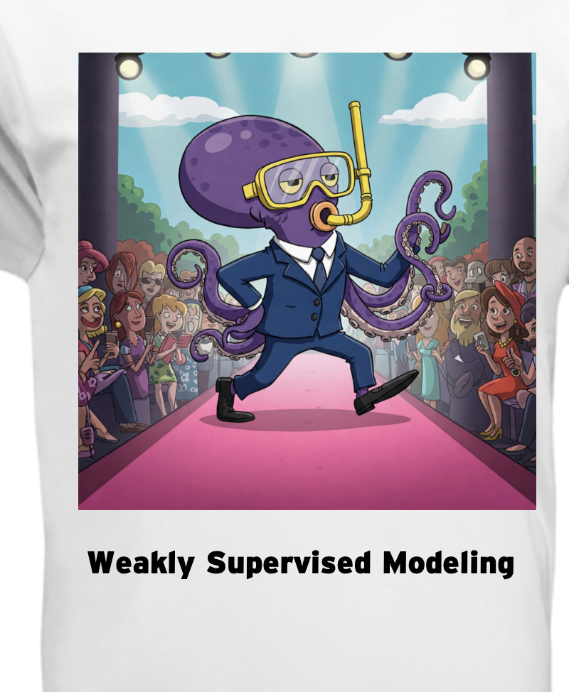
It turns out we got the first bingo within an hour and a half :D.
Before the first meeting I get called on stage to do some impromptu standup which people enjoy. I thought about doing my bomb joke but even a few days before leaving I still decided not to. This is the last time I’m gonna do standup comedy in front of my entire company and it really is something I’m gonna miss. It can be scary doing a bunch of jokes in front of co workers but the thrill always gets me.
After that the quality takes a nosedive when our CEO gives his key note. Don’t get me wrong its a standard keynote but after my standup it all feels boring by comparison. The bingo actually comes in quite useful as it helps me pay attention to see if I can tick stuff off (others would later tell me it helped them pay attention as well). Towards the end of the keynote I myself got bingo (though others beat me to it which I’m happy about).
Once I get bingo I realize there is no need for me to attend any of the actual meetings here at the offsite. I’ve never been one for unnecessary meetings and I like to live by the rule Elon Musk set at Tesla of leaving meetings that you don’t feel you are needed in without judgement. Even though I don’t work at Tesla I still feel thats a good rule. Also when you think about it, if unnecessary meetings lower my morale don’t I owe it to the company to leave for the sake of my morale? One could say I can get away with this because I’m leaving in a few days but to be fair I did this last year with no real consequences as well. I quickly learned that “mandatory” meetings aren’t really mandatory. What are they gonna do, take attendance?
Instead of attending the meetings after the keynote I go for a walk from the hotel to Fort Mason and come back for lunch. The food at the offsite was consistently terrible so instead of eating that garbage I go to In-N-Out and get a bunch of meat patties. Did you know they’ll just give you meat patties without the bun for cheaper? Well now you do and that’s the power of knowledge. I spend my lunch eating my meat and hanging with my coworkers.
Once lunch is over and all my coworkers go back to their regularly scheduled programming I decide to go for a walk to the Ferry Building and then check out the maritime museum right by our hotel. It turns out that there is a museum dedicated to some of SF’s maritime heritage. I get to see some pretty cool ships
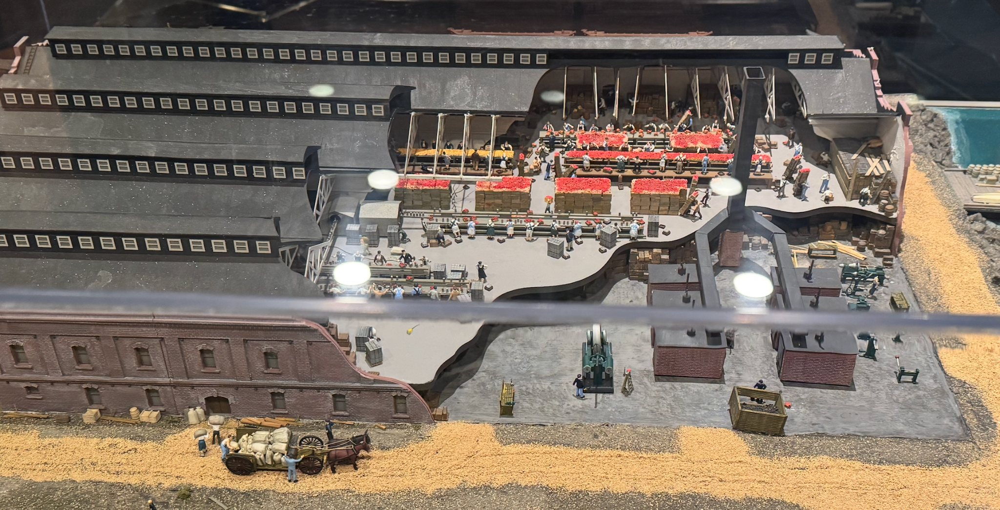
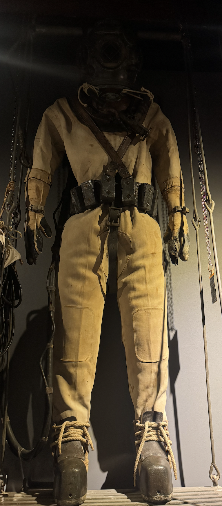
Once I finish that up the afternoon sessions conclude and its dinner time. The main event for the offsite is to go and hang out at Westwood for dinner and dancing. However me and some other coworkers ditch that. One of my coworkers lives right next to the hotel so we go to her place and doordash stuff and spill tea about our thoughts on the company. It was far more fun than whatever we would have done at Westwood. And from what we heard the food at Westwood (unsurprisingly) sucked.
Tuesday
Before the normal activities I play pickleball with some of my coworkers in the morning. Between picking up running last year and doing pickleball I can feel myself more and more becoming the basic SF techbro. All I’m missing is rock climbing and I’ll be the complete package.
I’m not very good at pickleball but I manage to at least score some points and I have to admit its actually quite fun. Perhaps I should find some friends to play with and actually start playing some time, I could see this becoming something I quite like! We take a picture afterwards but because I’m now kicked off the company Slack I will instead give you a doodle based on what I remember of the picture
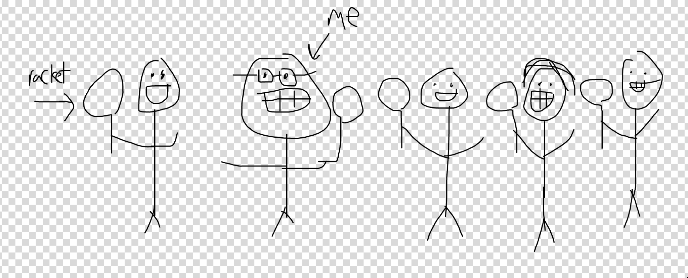
After pickleball I once again skip the meetings I’m not needed at (that is to say all of them). After a full day of walking and lazing its time for the evening activity. This time I decide to go as its a boat ride in the Bay. This is pretty fun
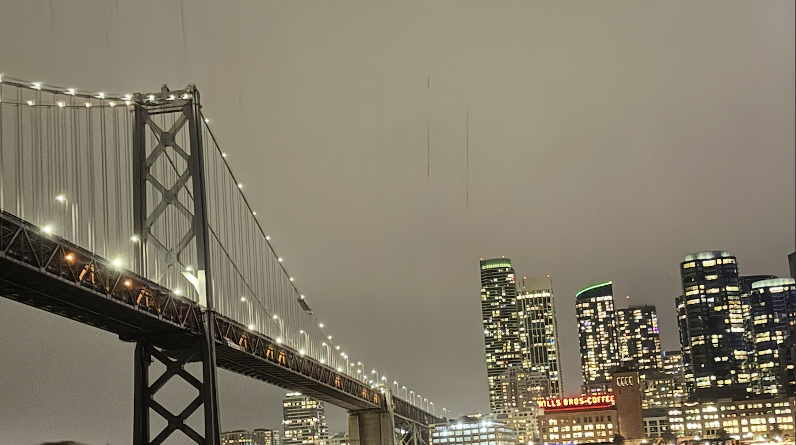
On the boat we also have karaoke! Just like with the last two company offsites I’m the one to kick it off! Originally I was planning to do Rap God by Eminem but instead I decide to do another Eminem song “Without me”. I decide to do this one because the song has the lyric
'Cause we need a little controversy
'Cause it feels so empty without me
And I decided to replace it with
'Cause we need a little controversy
'In 3 days so empty without me
To reflect the fact that I’ll be leaving in 3 days. Many of my coworkers appreciated that. After the boat ride some of us go to Bow Bow in Chinatown to do karaoke where I then do Rap God. Once thats done I go back to the hotel where I have some conversations with coworkers who are incredibly sloshed. Its truly some of the most unhinged stuff in the funniest way possible. Apparently one of my coworkers told his son about me and now said son wants to meet me when they come to the Bay this summer which I will definitely follow up on. A perfect way to end the offsite!
Wednesday
With the offsite over I head back to the office and finish up my last bit of actual work that I need to do for the company. Once thats over I could pretty much just turn in my laptop and walk out. Of course I don’t want to do that as I still want to savor the time I have with my coworkers. I turn my attention to writing up a big lore document on company history that many of the younger folks wouldn’t know about. This winds up being a pretty massive undertaking (about 5K words). I’d share it here but there is actual confidential information in there so I won’t.
After that I go to Midnight Runners. As I’m leaving my house it starts drizzling a bit. I figure it would probably clear up by the time I get there and the run would be dry. This very much proves to not be the case and the actual run winds up being rather wet. The first half is manageable
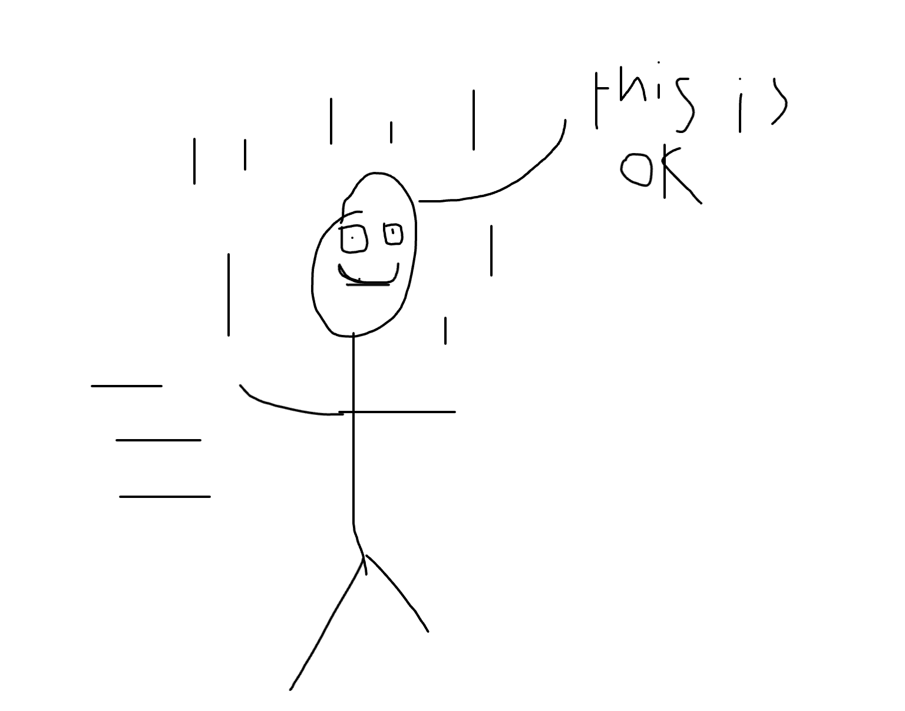
To be more like this
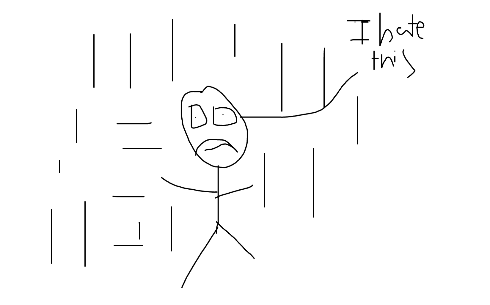
When the rain really picks up during the final phase I try to as fast as I can just to get indoors. Definitely one of the tougher runs I had to do. One brightside though is I meet someone else on the run who also does a fair amount of trash pickup! I recognized her “Refuse Refuse shirt”!
Thursday
Today I go into the office mainly to talk with people and work on the lore doc. Once thats done I go home and play online board games with friends. While playing I find there is an experimental matchmaking event run by some folks over at The Commons and I decide to check it out.
For those unaware The Commons is a place over by Lower Haight where people can pay to be members and have access to community events. I’d join if the membership fees weren’t $200 a month.
The hosts of this event said this was a test they wanted to run with about 20-30 people before expanding to 1000+. The way this event works is they ask a bunch of questions and ask people to gather on multiple sides based on their answer and then talk with each other. The questions they asked were “interesting” to say the least. Some of them included
Can you touch your palms to the floor
How many books have you read in the last year (0-5, 5-10, 10+)
Is your net worth more or less than 300K?
Did you hold a new born within the last year?
As you may have guessed these questions don’t really have a lot to do with romantic compatibility. In addition when people separated it wasn’t really into 1:1 as opposed to groups of varying sizes which made it harder to get to know people. I talked with a variety of folks and while it was fun for potential friendship building the romantic aspect didn’t really work out. But considering I just found out about it an hour and a half before I don’t really care and it was still fun to try. Who knows maybe a more romantic compatible version of this will come out in the future.
Friday
Hard to believe but its my last day of the job! I post a company wide note to Slack saying I’m leaving as is tradition. Usually when folks do this they mention how great it was to work with everyone, etc. While I do that I decide to take an unusual approach and give shoutouts to different folks that I’ve worked / talked with. If y’all want to read about me praising my co-workers I’m attaching my appreciation doc here.
Once thats done I continue working on the lore doc which gets done a little after noon. Once thats done and I’ve talked with everyone at the office I realize there is nothing left for me to do so I put my laptop on the IT-desk and walk out. Just like that I’m done! The weather that morning started off raining but once all was said and done it cleared up. I don’t know if thats a sign or not but I decided to take it as one!!
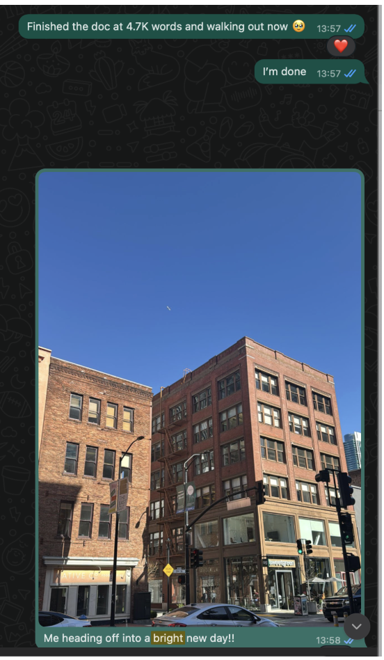
Since the day is nice I celebrate my newfound freedom by going to Golden Gate Park for a nice walk! After that its time for Shuffle Dating!
I learned from my mistakes last time and I don’t wear the chastity hat, nor do I go on a run before. I’m locked in! Like the last newsletter on the topic though I’ll do a breakdown of each date.
Date 1
This date is ok. She lives in the East Bay which is a bit annoying but not a dealbreaker. She is really into outdoor activities and sports which is fine. We have a nice enough conversation. She was annoying to find though because her only description was “Likes a tall glass of Pinot Noir”. Most descritipons include stuff like what they’re wearing, hair color, etc. You know, stuff that helps me find someone in a bar. This told me nothing except to wait for other people to find each other and then I use process of elimination to find her which is exactly what I did
Date 2
This date was fun. She’s a special ed teacher which I thought was cool because I don’t really meet too many of those. At one point she asks me what trait I would use to describe myself. I think about this for a minute and after realizing I don’t want to use a cliched answer like “kind”, “caring” I go with “unique”. When asked why I describe various things about myself like my newsletter or the chastity hat. She asked how said hat makes me feel and when I said I liked it she said “rock on!”. Maybe not the best sign for a romantic partner but I realized we probably wouldn’t work out so I decided to just be honest.
Date 3
It turns out one of the people at this event was a friend of mine I met at a Meetup a while back. Since neither of us were interested in matching with each other this was really just a break / catchup. Nothing interesting to report here.
Date 4
This girl turned out to be someone else who was also at the Meetup but she wasn’t someone I recognized which was interesting. My talk with this girl was fine. Nothing great, nothing terrible.
Date 5
This girl was also not someone I was interested in matching with but I was interested to hear that her career was in ordering uniforms for airline pilots. I learned that even socks are a part of the uniform according to her. Other than that she was fine and all but it didn’t really go anywhere for either of us beyond casual chit chat.
Date 6
Originally I wasn’t sold on this girl and for most of the conversation I thought “She seems fine but prob not a match”. She did however say something that really got me thinking. The topic went to meeting strangers at random places like restaurants and when I told her I don’t usually do that because I’m worried they may not be into it she basically said “Who gives a fuck. If you’re jut meeting someone for the first time who cares.” It gave me some food for thought when I realize that there are a lot of times I never approach interesting strangers out of fear and should work on that which is something I currently lack.
Date 7
This date was interesting. She was a grad student studying education pedagogy and I learned how she was working to address inequality in education through mentoring. One of the students she was mentoring was trying to get into research and was working with a professor. However the student came from an east asian country where deference to superiors was encouraged to the point that she had a hard time feeling comfortable contributing her own research ideas and just following what the professor said, and she was working to help her feel more comfortable contributing her own ideas which I thought was super cool.
Date 8
I mentioned that Date 3 was a friend of mine and Date 8 was a friend of Date 3 as they both came together. Conversation was ok but nothing amazing here.
Date 9
Date 9 was the one I found the cutest but the conversation was a solid “ok”. Nothing too interesting to report here. Since she lived in Mission I think I tried to convince her to go to trash pickup but she didn’t really bite which is the more common reaction. I made some graphs below graphing both the relative romantic and platonic vibes from all the dates.
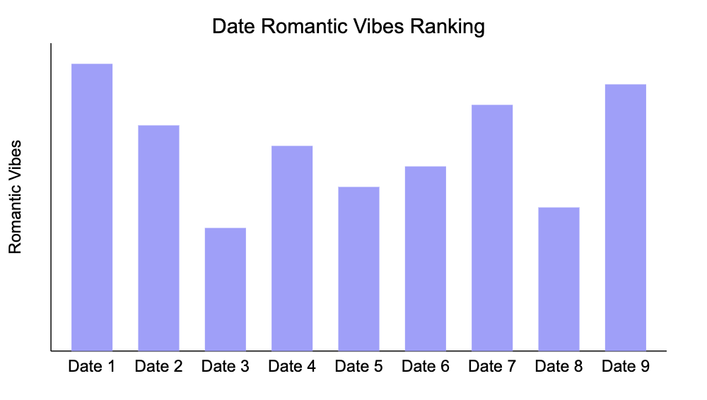
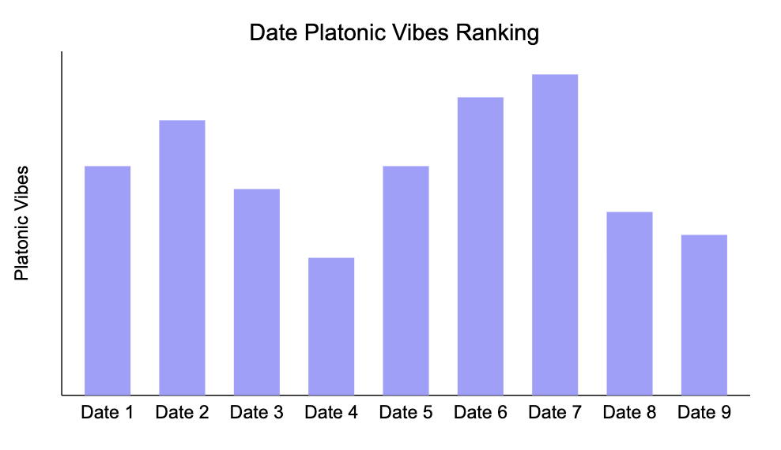
Saturday
The day begins with trash pickup as per usual. From there I catch up with some friends and hang out in Dolores park for a while. After that some of my friends are having a pregame before going to a punk rock / emo concert. Its very similar to this one that I went to a few weeks ago. Originally I was planning to go to the concert as well but tickets sold out the day of :(. In my defense the last time I went there were tickets available at the door so me and a few other people thought we could buy tickets at the last minute but sadly that wasn’t the case today. So after the pregame (which was still quite fun), I go home and catch some Z’s.
Sunday
Our day once again begins with trash pickup. Afterwards I head to Pac heights for a date. This date is somewhat interesting in that it was a blind date which I’ve never gone on before. We wind up going to get a snack and hang out at Lafayette park. This was a somewhat unique first date for me in that usually I’m the one who plans a first date and pays for it but this time she did which was a change of pace. The conversation itself goes pretty well. She likes to plan interesting events which I found to be a plus. On top of that shes also very into reading and talked a lot about things shes reading which I found interesting. While I don’t read a lot of books we did talk a bit about Substack writers and I mentioned to her that I’m writing a newsletter which she thought was pretty cool. Unfortunately the date is slightly on the shorter side (about an hour) as she mentions needing to do some errands which I worry is a bad sign but this does somewhat work for me as I need to go back and get ready for a board game night I’m hosting.
I invited some friends over to play board games and eat pasta I cooked. I introduced two friends to a game I mentioned before called Dune Imperium. It's a pretty fun worker placement game kinda like Catan except it's more complicated and it doesn’t suck. I’ll admit I give my friends somewhat of a trial by fire introduction to this complicated game but they do quite well for their first time! Not well enough to win mind you but they played admirably and with lots of spirit!
It turns out one of my friends had a hard time making it home unfortunately. Due to the combination of being directionally challenged (I mean really directionally challenged), a phone on 4%, and missing their bus stop due to falling asleep they overshoot and then I get worried. Me and some of my other friends hop on a call to see if we can do anything to help but unfortunately short of going to the area and mounting a search there is nothing we can do. Thankfully they managed to get home using the simple trick of getting off the bus and taking the one going the opposite way and getting to their stop. I know what I said likely sounds so easy its not worth pointing out but for my friend who is severely directionally challenged this is actually something akin to a miracle that they were able to find their way back without their GPS telling them exactly what to do.
Once board game night ends I write up the newsletter. Unfortunately this one takes a while so for the first time in a while I bleed into Monday.
The date from today said I wasn’t quite who she was looking for, but I did want to leave you all with this exchange that I didn’t send to her of course but I did think was funny
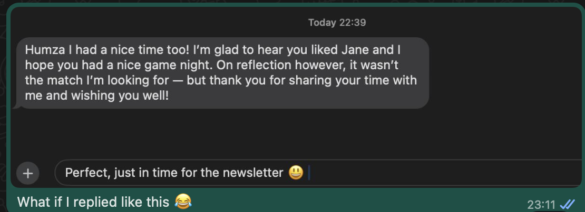